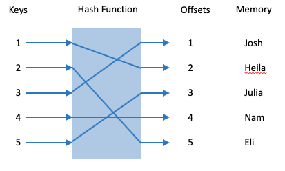

Class summary: How Hashtables Work
Copyright (c) 2017 Kathi Fisler
Now that you have a sense of how to program with hashtables, let’s go under the hood and see how they are able to do lookup in constant time.
When we first started hashtables, we discussed this idea that if we know where each item is in memory relative to the hashtable itself, we can compute the location of an item in constant time. The idea was roughly along the following lines:
Assume that we have a block of 5 consecutively-numbered dorm rooms (singles!) and we want to track which student has been assigned to each room. We might write this example as follows:
rooms = {1: "Heila", |
2: "Eli", |
3: "Josh", |
4: "Nam", |
5: "Julia" |
} |
We could imaging putting each key/value in a separate memory location, in order, such that we can use the keys to find the locations.
Prog Dictionary Memory |
----------------------------------------------------------------------- |
rooms --> loc 1001 loc 1001 --> {loc 1002, loc 1003, ... loc 1006} |
loc 1002 --> "Heila" |
loc 1003 --> "Eli" |
loc 1004 --> "Josh" |
loc 1005 --> "Nam" |
loc 1006 --> "Julia" |
Now, assuming we want to know who is in room 3. We would write
rooms[3] |
and Python could get to location 1004 (where the value for key 3 is) by looking up the address of rooms (getting loc 1001) and adding 3 to get loc 1004.
This is a fine intuition, but it doesn’t generalize to keys that aren’t consecutive numbers. The picture for hashtables is bit more subtle.
1 Hash Functions and Hash Codes
What actually happens is summarized by the following picture:

That box in the middle is called a hash function. The hash function takes keys as inputs and produces offsets or indices into the hashtable as outputs (these outputs are called hashcodes). The hashcodes will be used both to store the value and to retrieve values associated with keys.
As another example, go back to our hashtable mapping from classrooms to seating capacity from last lecture:
# map course codes to seating capacity |
seats = {"CIT368": 63, |
"BERT130": 200, |
"FRDMN101": 48 |
} |
Assume h is our hash function and that seats is at loc 1007. If you write
seats["BERT130"] |
then under the hood, the language gets the value from
loc 1007 + h("BERT130") |
As long as the hash function maps every key to a unique offset within the size of the hashtable, all of this works fine.
Who defines the hash function? The programming language does this for you automatically, based on the type of the keys. Roughly, Python maps each type (or component thereof) to a prime number, multiplies the parts together and uses modulo to make the number fit in the size of the hashtable. As a programmer, you never see the hash function or the mapping. It all happens under the hood. Hash functions depend on a fair bit of mathematics that are beyond what we will cover in this course. But that is what’s going on.
2 What if we need to add keys to the hashtable later?
This approach of adding offsets depends on all of the values being in consecutive locations in memory. But what if you set up a hashtable, then need to add key-value pairs later? You won’t have consecutive locations anymore.
There are several answers to this. First, hashtables actually set aside extra locations up front (the default differs across languages). When you run out of that room, different languages take different approaches: small hashtables might just be resized into a new memory location. Larger hashtables get extended in other ways. As a programmer, this is again an issue you don’t have to think about.
For those moving onto CS18, we will implement hashtables and their extension mechanisms in detail as part of the course.
3 Datatype as keys
Hashtables allow any type to serve as either keys or values. Imagine that an airline wants to use Flights as keys to look up lists of passengers:
from dataclasses import dataclass |
|
@dataclass |
class Flight: |
num: int |
frm: str |
to: str |
|
roster = {Flight(206, "PVD", "DEN"): ["Kathi", "Eli"], |
Flight(315, "PVD", "NYC"): ["Heila"], |
Flight(420, "PVD", "CHI"): ["Josh"] |
} |
If we try to run this, Python reports "unhashable type: Flight". What’s the problem?
When dataclasses (or other complex data) are used as keys, Python creates the hash function using the values in the components of the class. For example, for Flight(206, "PVD", "DEN"), the hashcode will depend on the specific values 206, "PVD", and "DEN".
For a hashtable to work, however, the same item in memory must always map to the same hashcode (otherwise, Python will look in a different location to retrieve the value). What if we update a component of the class though (such as the balance in an account)? The next time the hash function gets called (say to lookup the value), the component values are different, so the item will hash to a different memory location. This means you can’t actually get back to the original value stored for the key!
To avoid this problem, follow a straightforward rule: don’t use classes that you plan to mutate/update as hashtable keys. This is a reasonable restriction for flights (changing any component would mean creating a new flight). It isn’t a reasonable restriction for Accounts.
What remains is to tell Python that we don’t plan to modify the values of the components of Flights. We add an annotation to the dataclass to convey this:
@dataclass(frozen=True) |
class Flight: |
num: int |
frm: str |
to: str |
The frozen annotation says "the components of this class cannot be changed". If you try to assign to a component of a frozen class such as Flight, Python will produce an error.
In practice, there are ways to use values with changing components as keys, but they are more advanced that we want to cover this semester. What we’ve shown should suffice for whatever practical programming most of you will do coming out of 111. We will show the more advanced material in CS18. If you want to read details for yourself, look up _hash_ methods in Python (though be aware that this relies on some other Python material that we haven’t covered this semester).